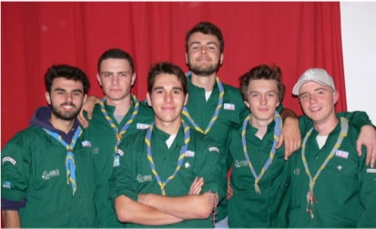

Le scoutisme
Les scouts et guides sont un mouvement créé par Badden Powell. C’est un mouvement qui a pour vocation de rassembler les jeunes du monde autour de valeurs communes tels que le partage, l’entraide, le don de soi, l’environnement.
Autour de tout ça, s’est créé d’autres mouvements liés. De base c’est un mouvement qui à des origines catholiques mais la religion n’est pas obligatoire, d’autres groupes s’en sont complètement écartés.
Pour s’organiser, on distingue les groupes par tranche d’âge afin d’assurer la sécurité de ses membres. Nous comptons tout d’abord les Louveteaux Jeannette de 6 à 11 ans, les Scouts et Guides de 11 à 14 ans, les Pionniers Caravelles de 14 à 17 ans et les Compagnons de 18 à 20 ans.
À la fin de chaque parcours scout, un voyage solidaire est organisé à l’étranger pour participer au développement d’un pays. À la suite des Pionniers Caravelles, on propose aux jeunes à leur tour de prendre le flambeau, de la même manière que leurs chefs, apprendre à d’autres jeunes les valeurs du scoutisme.
Ainsi, différents « chefs » passent leur BAFA pour accompagner ces jeunes tout au long de l’année ainsi qu’à la période d’été pour le camp. Ce projet s’échelonne sur l’ensemble de l’année pour aboutir au camp d’été. D'autres partenaires sont présents comme La Croix Rouge ou France Nature et Environnement.
Le scoutisme est catégorisé comme une école de la vie, on y apprend les valeurs fondamentales pour sensibiliser les jeunes à la citoyenneté.
Les jeunes sont amenés à monter dès leur plus jeune âge des petits projets initiés par leur chef mais restent autonomes quant à la réalisation de ceux-ci. Le but étant d’essayer de les responsabiliser et de réaliser des projets qui leurs ressemblent comme les ateliers de nœuds pour monter les tentes, la création d’espaces de composte, des cabanes sur pilotis, apprendre à trouver des plantes comestibles, reconnaître la faune et la flore, faire du sport et des grands jeux.
Le mouvement scout s’inscrit dans une démarche spirituelle, chaque jeune est un membre à part entière du groupe. Pour chaque tranche d’âge, les jeunes première année sont marqués par la Promesse, soirée qui marque l’inclusion de ces membres dans le groupe et son respect pour les valeurs du scoutisme.
Des temps d’échange sont prévus pour discuter sur divers sujets sociétaux de sorte à susciter l’éveil de leur sens critique et éthique.
Tous les 4 ans a lieu le Jamboree de chaque tranche d’âge, un rassemblement de scouts venant du monde entier.
Je vais vider mon sac (de scout) :
- une gamelle
- un couteau
- un foulard
- une chemise
- des chaussures de marche
- mon cairn
- mon duvet
- mon tapis de sol
- mon coussin
- ma gourde
- ma serviette
- ma bassine
- mon gel douche
- ma boussole
Mon voyage :
Cette année, mon équipe est partie à Katmandou au Népal. Nous nous sommes associés à l’association Jivana Népal pour aider des orphelins qui ont subi il y a 5 ans de terribles tremblements de terre ravageant le pays. Nous avons alors portés notre aide sur la reconstruction de leur orphelinat comme par exemple la pose de lino dans les dortoires ainsi que l’organisation de diverses activités comme des olympiades, des jeux en tout genre et la collecte de déchets pour sensibiliser ses jeunes et les habitants du village au recyclage et au traitement des déchets.
Ce voyage a été organisé en 2 ans, c’est-à-dire la recherche d’un besoin dans un pays et la recherche de fonds pour y répondre. Pour cela, nous avons effectué de nombreux travaux comme de la maçonnerie ou encore l’organisation d’événements. C’est avec fierté et la tête remplie de souvenirs que nous avons présentés et retransmis nos expériences avec les jeunes de notre groupe, nos familles et nos amis.